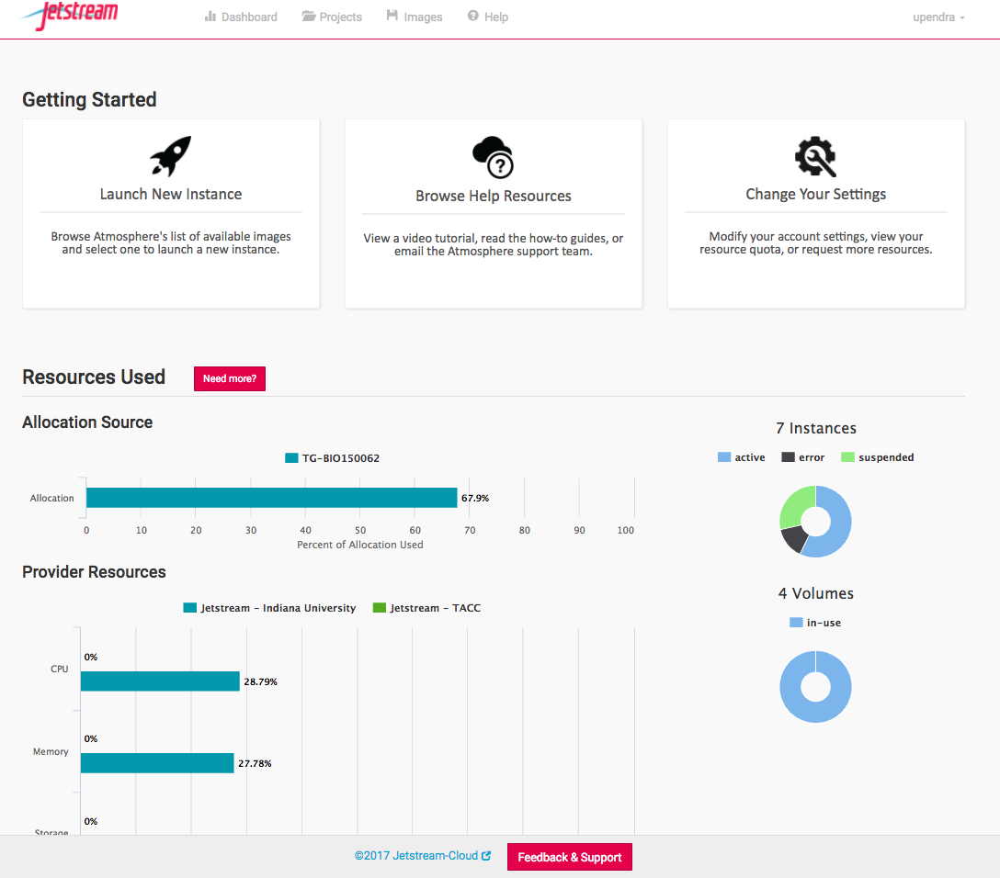
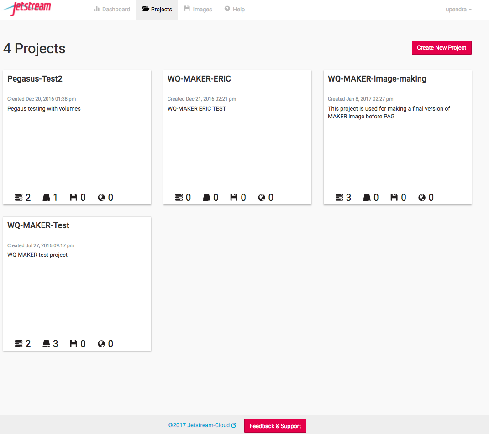
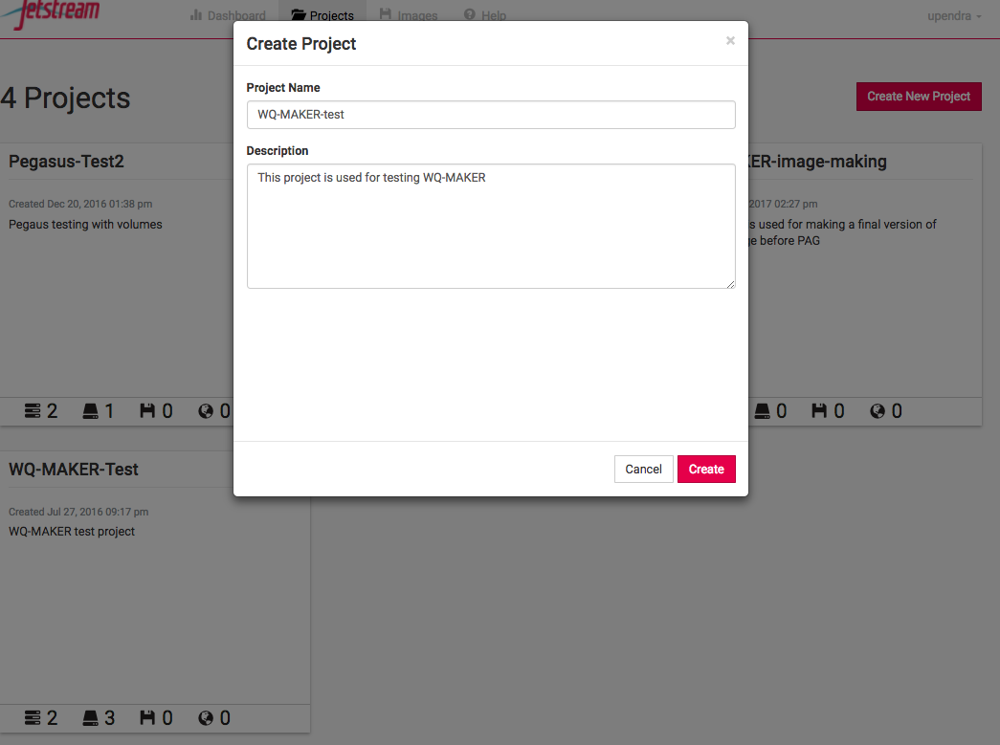
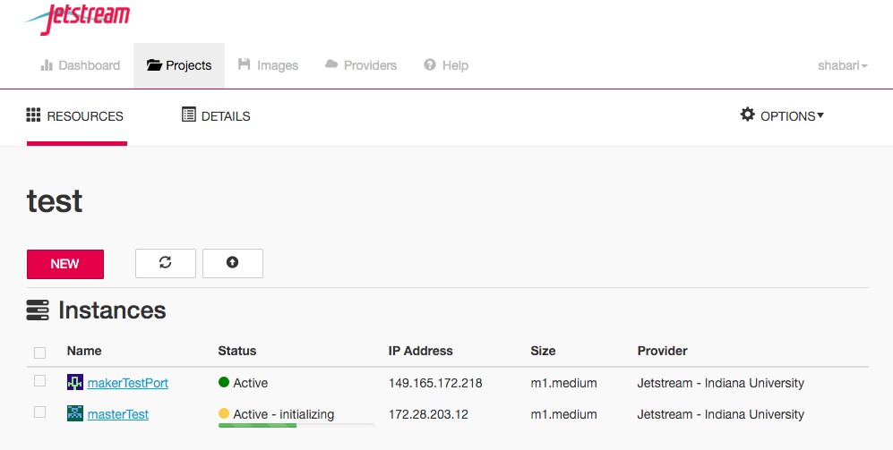
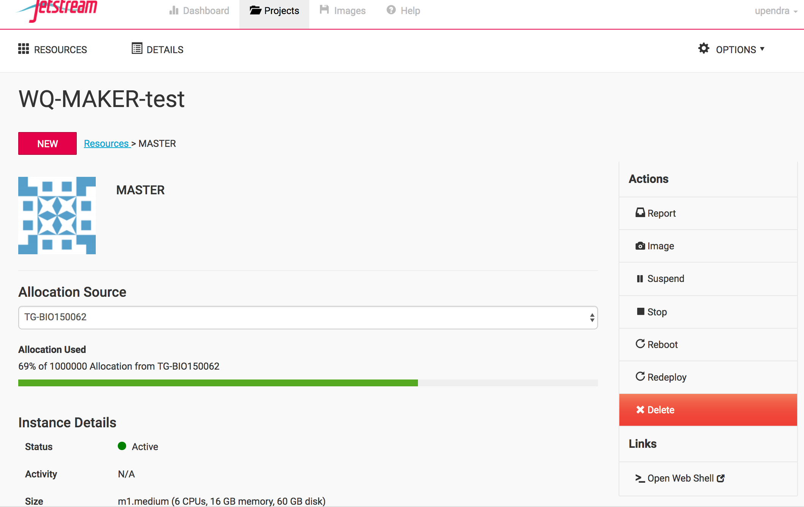
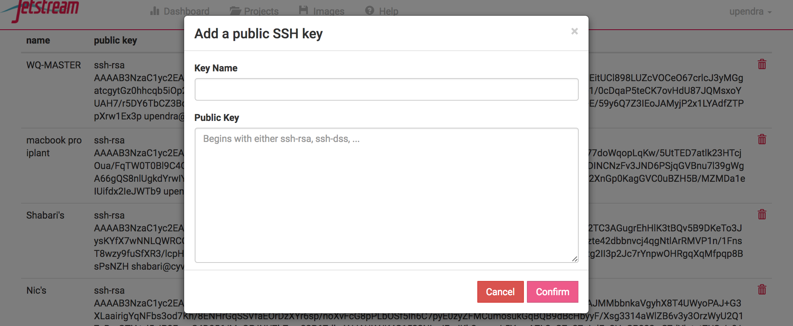

MAKER Genome Annotation using cc-tools and Jetstream(WQ-MAKER)¶
Rationale and background:¶
MAKER is a flexible and scalable genome annotation pipeline that automates the many steps necessary for the detection of protein coding genes (Campbell et al. 2013). MAKER identifies repeats, aligns ESTs and proteins to a genome, produces ab initio gene predictions, and automatically synthesizes these data into gene annotations having evidence-based quality indices. MAKER was developed by the Yandell Lab and is described in several publications (Cantarel et al. 2008; Holt & Yandell 2011). Additional background is available at the MAKER Tutorial at GMOD and is highly recommended reading.
MAKER with CCTools (aka WQ-MAKER) is a modified MAKER annotation tools capable of running MAKER on distributed computing resources such as Jetstream cloud (Thrasher et al., 2012). Using the work-queue platform, users can now run MAKER across multiple virtual machines to achieve a several fold reduction in the duration of the MAKER run.
This tutorial will take users through steps of:
Running WQ-MAKER on Jetstream cloud
Running WQ-MAKER on an example genome assembly data
Considerations¶
Sounds great, what do I need to get started?
Jetstream allocation. If you don’t have one, you can send in your request to add you to CyVerse’s JS allocation through the intercom (button on the bottom right on this page).
XSEDE account
Your data (or you can run example data)
What kind of data do I need?
Mandatory Requirements
1.1 Genome assembly(fasta file)
1.2 Organism Type
1.2.1 Eukaryotic(default, set as: organism_type=eukaryotic) 1.2.2 Prokaryotic(default, set as: organism_type=prokaryotic)
Additional data that can be used to improve the annotation (Highly recommended)
- 2.1 RNA evidence (at least one of them is needed)
2.1.1 Assembled mRNA-seq transcriptome (fasta file) 2.1.2 Expressed sequence tags (ESTs) data (fasta file) 2.1.3 Aligned EST or transcriptome GFF3 from your organism 2.1.4 Aligned EST or transcriptome GFF3 from a closely related organism
- 2.2 Protein evidence
2.2.1 protein sequence file in fasta format (i.e. from multiple organisms) 2.2.2 protein gff (aligned protein homology evidence from an external GFF3 file)
What kind of resources will I need for my project?
Enough storage space on the WQ-MAKER Jetstream instance for both input and output files
1.1 Creating and mounting an external volume to the running WQ-MAKER MASTER instance would be recommended
One Master and several workers needed for running your computation
2.1 Benchmarking results for data sets can help you estimate the number of workers need for running your annotation
Enough AUs to run your computation
Part 1: Connect to an instance of an WQ-MAKER Jetstream Image (virtual machine)
Step 1: Go to https://use.jetstream-cloud.org/application and log in with your XSEDE credentials.



Step 2: Click on the “Create New Project” in the Project tab on the top and enter the name of the project and a brief description


Step 3: Launch an instance from the selected image and name it as MASTER
After the project has been created and entered inside it, click the “New” button, select “MAKER 2.31.9 with CCTools” image and then click Launch instance. In the next window (Basic Info),

3.1 name the instance as “MASTER” (don’t worry if you forgot to name the instance at that point, as you can always modify the name of the instance later) 3.2 set base image version as “2.0” (default) 3.3 leave the project as it is or change to a different project if needed 3.4 select “Jetstream - Indiana University or Jetstream - TACC” as Provider and click ‘Continue’. Your choice of provider will depend on the resources you have available (AUs) and the needs of your instance 3.5 select “m1.medium” as Instance size (this is the minimum size that is required by WQ-MAKER image) and click “Continue”.

Step 4: As the instance is launched behind the scenes, you will get an update as it goes through each step.
Status updates of Instance launch (both MASTER and WORKER) include Build-requesting launch, Build-networking, Build-spawning, Active-networking, Active-deploying. Depending on the usage load on Jetstream, it can take anywhere from 2-5 mins for an instance to become active. You can force check updates by using the refresh button in the Instance launch page or the refresh button on your browser. Once the instance becomes active a virtual machine with the ip address provided will become available for you to connect to. This virtual machine will have all the necessary components to run WQ-MAKER and test files to run a MAKER demo.

Step 5: Create a volume
Since the m1 medium instance size (60GB disk space) selected for running MASTER instance of WQ-MAKER may not be sufficient for most of the MAKER runs, it is recommended to run it on volumes
5.1 Click the “New” button in the project and select “Create Volume”. Enter the name of the volume, volume size (GB) needed and the provider (TACC or Indiana) and finally click “Create Volume”

Attach the created volume to the MASTER Instance

5.2 Click on the MASTER instance now

Jetstream provides web-shell, a web based terminal, for accessing your VM at the command line level once its been deloyed.

However, you might find that you wish to access your VM via SSH if you’ve provisioned it with a routable IP number. For SSH access, you can create (or copy) SSH public-keys for your non-Jetstream computer that will allow it to access Jetstream then deposit those keys in your Atmosphere settings. More instructions can be found here
Step 6: Add public SSH key of MASTER to Jetstream
If you do not already have a ~/.ssh/id_rsa.pub file, then run this command to create it. Use all the defaults..
Copy the public SSH key from your id_rsa.pub file and paste it to the https://use.jetstream-cloud.org/application/settings, give a name (MASTER) to it and click confirm.

Step 7: Launch WORKER instances from MAKER 2.31.9 with CCTools image
Launch one to several instances from the MAKER 2.31.9 with CCTools image and name them as WORKER-1, WORKER-2 etc.,

**Part 3: Set up a MAKER run using the Terminal window. Instead IF you want to run the WQ-MAKER using Jupyter notebook please see the section below **
Step 1: Navigate to the mounted volume.
Once you have logged in to your instance using webshell or ssh of your MASTER instance, you must change the directory permissions as below
Step 2: Get oriented. You will find staged example data in “/opt/WQ-MAKER_example_data/” within the MASTER instance. List its contents with the ls command:
2.1 maker_*.ctl file are a set of configuration files that can be used for this exercise or generated as described below. 2.2 worker-launch.yml and maker-hosts are ansible-playbook and host file for luanching jobs on WORKERS (optional for WQ-MAKER) 2.3 fasta files include a scaled-down genome (test_genome.fasta) which is comprised of the first 300kb of 12 chromosomes of rice and scaled-down genome (test_genome_chr1.fasta) which is comprised of the first 300kb of first chromosome of rice 2.4 mRNA sequences from NCBI (mRNA.fasta) 2.5 publicly available annotated protein sequences of rice (MSU7.0 and IRGSP1.0) - msu-irgsp-proteins.fasta 2.6 collection of plant repeats (plant_repeats.fasta) 2.7ribosomal RNAsequence of rice (Os-rRNA.fa)
Executables for running MAKER are located in /opt/maker/bin and /opt/maker/exe:
As the names suggest the “/opt/maker/bin” directory includes many useful auxiliary scripts. For example cufflinks2gff3 will convert output from an RNA-seq analysis into a GFF3 file that can be used for input as evidence for WQ-MAKER. RepeatMasker, augustus, blast, exonerate, and snap are programs that MAKER uses in its pipeline. We recommend reading MAKER Tutorial at GMOD for more information about these.
Step 3: Set up a WQ-MAKER run. Create a working directory called “maker_run” on your home directory using the mkdir command and use cd to move into that directory:
Step 4: Copy the contents of “WQ-MAKER_example_data” into the current directory using cp -r command. Verify using the ls command. Change the permissions on that directory
Step 5: Run the maker command with the –help flag to get a usage statement and list of options:
- Step 6: Create control files that tell MAKER what to do. Three files are required:
6.1 maker_opts.ctl - gives location of input files (genome and evidence) and sets options that affect MAKER behavior 6.2 maker_exe.ctl - gives path information for the underlying executables. 6.3 maker_bopt.ctl - sets parameters for filtering BLAST and Exonerate alignment results
To create these files run the maker command with the -CTL flag. Verify with ls:
Otherwise open the maker_opts.ctl in a text editor of choice )
Here are the sections of the “maker_opts.ctl” file you need to edit. For more information about the this please check this The_MAKER_control_files_explained - Add path information to files as shown.
This section pertains to specifying the genome assembly to be annotated and setting organism type:
The following section pertains to EST and other mRNA expression evidence. Here we are only using same species data, but one could specify data from a related species using the “altest” parameter. With RNA-seq data aligned to your genome by Cufflinks or Tophat one could use maker auxiliary scripts (cufflinks2gff3 and tophat2gff3) to generate GFF3 files and specify these using the est_gff parameter:
- ..code-block:: bash
#—–EST Evidence (for best results provide a file for at least one) est=./test_data/mRNA.fasta #set of ESTs or assembled mRNA-seq in fasta format altest= #EST/cDNA sequence file in fasta format from an alternate organism est_gff= #aligned ESTs or mRNA-seq from an external GFF3 file altest_gff= #aligned ESTs from a closely relate species in GFF3 format
The following section pertains to protein sequence evidence. Here we are using previously annotated protein sequences. Another option would be to use SwissProt or other database:
This next section pertains to repeat identification:
Step 7: Run WQ-MAKER
Before running MAKER, check to make sure all worker instances have become active.
On the MASTER instance, make sure you are in the “maker_run” directory and all of your files are in place and then run:
7.1 -contigs-per-split 1: splits the genome file into 1 contig/scaffold/sequence per file. By specifiying this option, we are telling wq_maker to split the genome file into 1 sequence per file. By default, the wq_maker splits the fasta file into 10 sequences per file and this case, it is not ideal because, there will be 2 files (1 containing chromosomes from 1-10 and the other containing 11-12). This will decrease the speed at the wq_maker annotates the genome.
Warning: Unless otherwise you have a complete genome containing chromosomes or very few scaffolds, it is not recommended to use this option. For example if you have a genome that contains 10,000 sequences, then this option will create 10,000 files on your working directory which is not ideal of navigation purposes. Check to see how many contigs/scaffolds/chromosomes you have in your genome using grep “>” -c <genome fasta file> and if the number is too high, then avoid this option
7.2 N maker_run_ud sets the project name to wq_test_{USER}. This is mandatory if we need to run WQ-MAKER.
7.3 -d all Sets the debug flag for Work Queue. For all debugging output, try ‘all’ 7.4 -o master.dbg Sets the debug file for Work Queue 7.5 -debug_size_limit=0 Sets the byte wrap around on the debug file. 0 signifies it is never wrapped (Default it 1M)
Wait for the MASTER to advertise master status to the catalog server before your run WQ-MAKER on the WORKERS (see below).
INFO $ tail log_file.txt
Mon Sep 11 15:08:22 2017 :: Submitting file ./test_data/test_genome.fasta_000008 for processing. Mon Sep 11 15:08:22 2017 :: Submitted task 11 for annotating ./test_data/test_genome.fasta_000008 with command: mpiexec -n 1 maker -g ./test_data/test_genome.fasta_000008 -base test_genome -debug_size_limit=0 Mon Sep 11 15:08:22 2017 :: Submitting file ./test_data/test_genome.fasta_000006 for processing. Mon Sep 11 15:08:22 2017 :: Submitted task 12 for annotating ./test_data/test_genome.fasta_000006 with command: mpiexec -n 1 maker -g ./test_data/test_genome.fasta_000006 -base test_genome -debug_size_limit=0 warning: this work queue master is visible to the public. warning: you should set a password with the –password option.
Once the log_file show the above output and once your WORKERS are in active state, then either ssh or use webshell into each of the WORKERS and then run
7.6 -N wq_test_${USER} sets the project name to maker_run_test. This is mandatory if we need to run WQ-MAKER. This is the same id that we have specified with MASTER
7.7 –debug-rotate-max=0 Set the maximum size of the debug log (default 10M, 0 disables)
7.8 -d all Sets the debug flag for Work Queue. For all debugging output, try ‘all’ 7.9 -o worker.dbg Sets the debug file for Work Queue
7.10 –cores all Uses all the cores on the machine
Note(Advanced Users)¶
You can use Anisble method to launch jobs without ssh’ing into WORKERS from the MASTER itself. Once the maker run is started on the master, and once your WORKERS are in active state
Step 1: Copy ansible.cfg file into your home directory which will help you to avoid host verification
Step 2: Add ssh keys of MASTER to the JetStream atmosphere. This will allow Ansible to launch the jobs without ssh into the WORKERS. Step 3: Copy maker-hosts file into your working directory and populate it with ip addresses of the WORKERS
Step 4: Copy the Ansible playbook to your working directory.
Step 5: Run WQ-MAKER on the WORKERS
To check the status of the WQ-MAKER job, run the following. .. code-block:: bash
$ work_queue_status -M wq_test_${USER} PROJECT HOST PORT WAITING RUNNING COMPLETE WORKERS maker_run_test js-157-131.jetstream- 9155 8 4 0 4
Step 8. Stats output from MASTER instance The log_file.txt will tell you if the job has been finished or not.
$ tail log_file.txt
WQ-MAKER Start_time: 1505157588000000
WQ-MAKER End_time: 1505157849000000
WQ-MAKER Elapsed: 0d 0:04:21.000000
Work Queue Wall Time: 0d 0:04:00.427755
Cumulative Task Wall Time: 0d 0:36:25.377304
Cumulative Task Good Execute Time: 0d 0:36:25.377304
Work Queue Send Time: 0d 0:00:01.437632
Work Queue Receive Time: 0d 0:00:03.863163
-----------------------------------------------------------------
Mon Sep 11 15:24:09 2017 :: MPI used :: Cores 1 :: Memory 1024 :: Disk 2048
-----------------------------------------------------------------
The following are the output files from WQ-MAKER
8.1 The maker_opts.log, maker_exe.log, and maker_bopts.log files are logs of the control files used for this run of MAKER. 8.2 The mpi_blastdb directory contains FASTA indexes and BLAST database files created from the input EST, protein, and repeat databases. 8.3 test_genome_master_datastore_index.log contains information on both the run status of individual contigs and information on where individual contig data is stored. 8.4 The test_genome_datastore directory contains a set of subfolders, each containing the final MAKER output for individual contigs from the genomic fasta file.
Check the test_genome_master_datastore_index.log and task_outputs.txt to see if there were any failures:
All completed. Other possible status entries include:
FAILED - indicates a failed run on this contig, MAKER will retry these
RETRY - indicates that MAKER is retrying a contig that failed
SKIPPED_SMALL - indicates the contig was too short to annotate (minimum contig length is specified in maker_opt.ctl)
DIED_SKIPPED_PERMANENT - indicates a failed contig that MAKER will not attempt to retry (number of times to retry a contig is specified in maker_opt.ctl)
The actual output data is stored in in nested set of directories under* test_genome_datastore* in a nested directory structure.
A typical set of outputs for a contig looks like this:
The Chr6.gff file is in GFF3 format and contains the maker gene models and underlying evidence such as repeat regions, alignment data, and ab initio gene predictions, as well as fasta sequence. Having all of these data in one file is important to enable visualization of the called gene models and underlying evidence, especially using tools like Apollo which enable manual editing and curation of gene models.
The fasta files Chr6.maker.proteins.fasta and Chr6.maker.transcripts.fasta contain the protein and transcript sequences for the final MAKER gene calls.
The Chr6.maker.non_overlapping_ab_initio.proteins.fasta and Chr6.maker.non_overlapping_ab_initio.transcripts.fasta files are models that don’t overlap MAKER genes that were rejected for lack of support.
The Chr6.maker.snap_masked.proteins.fasta and Chr6.maker.snap_masked.transcript.fasta are the initial SNAP predicted models not further processed by MAKER
The output directory theVoid.Chr1 contains raw output data from all of the pipeline steps. One useful file found here is the repeat-masked version of the contig, query.masked.fasta.
Step 9: Merge the gff files .. code-block:: bash
$ gff3_merge -n -d test_genome.maker.output/test_genome_master_datastore_index.log
9.1 -d The location of the MAKER datastore index log file. 9.2 -n Do not print fasta sequence in footer
By default, the output of the gff3_merge is test_genome.all.gff, but you can have an alternate base name for the output files using “-o” option
If you want to perform abinition gene predictions then you should skip -n option. Run
And follow the rest of the steps of abinitio gene predictions in here
The final output from gff3_merge is “test_genome.all.gff” .. code-block:: bash
##gff-version 3 Chr6 maker gene 43764 46139 . - . ID=maker-Chr6-snap-gene-0.3;Name=maker-Chr6-snap-gene-0.3 Chr6 maker mRNA 43764 46139 . - . ID=maker-Chr6-snap-gene-0.3-mRNA-1;Parent=maker-Chr6-snap-gene-0.3;Name=maker-Chr6-snap-gene-0.3-mRNA-1;_AED=0.12;_eAED=0.50;_QI=64|0|0|1|0|0.33|3|0|76 Chr6 maker exon 43764 43846 . - . ID=maker-Chr6-snap-gene-0.3-mRNA-1:exon:2;Parent=maker-Chr6-snap-gene-0.3-mRNA-1 Chr6 maker exon 44833 44896 . - . ID=maker-Chr6-snap-gene-0.3-mRNA-1:exon:1;Parent=maker-Chr6-snap-gene-0.3-mRNA-1 Chr6 maker exon 45992 46139 . - . ID=maker-Chr6-snap-gene-0.3-mRNA-1:exon:0;Parent=maker-Chr6-snap-gene-0.3-mRNA-1 Chr6 maker five_prime_UTR 46076 46139 . - . ID=maker-Chr6-snap-gene-0.3-mRNA-1:five_prime_utr;Parent=maker-Chr6-snap-gene-0.3-mRNA-1 Chr6 maker CDS 45992 46075 . - 0 ID=maker-Chr6-snap-gene-0.3-mRNA-1:cds;Parent=maker-Chr6-snap-gene-0.3-mRNA-1 Chr6 maker CDS 44833 44896 . - 0 ID=maker-Chr6-snap-gene-0.3-mRNA-1:cds;Parent=maker-Chr6-snap-gene-0.3-mRNA-1 Chr6 maker CDS 43764 43846 . - 2 ID=maker-Chr6-snap-gene-0.3-mRNA-1:cds;Parent=maker-Chr6-snap-gene-0.3-mRNA-1
Moving data from CyVerse Datastore using iCommands¶
iCommands is a collection of commands for Linux and Mac OS operating systems that are used in the iRODS system to interact with the CyVerse Data Store. Many commands are very similar to Unix utilities. For example, to list files and directories, in Linux you use ls, but in iCommands you use ils. While iCommands are great for all transfers and for automating tasks via scripts, they are the best choice for large files (2-100 GB each) and for bulk file transfers (many small files). For a comparison of the different methods of uploading and downloading data items, see Downloading and Uploading Data. iCommands can be used by CyVerse account users to download files that have been shared by other users and to upload files to the Data Store, as well as add metadata, change permissions, and more. Commonly used iCommands are listed below. Follow the instructions on Setting Up iCommands for how to download and configure iCommands for your operating system. A CyVerse account is not required to download a public data file via iCommands. To see instructions just for public data download with iCommands, see the iCommands section on Downloading Data Files Without a User Account. For configuring icommands and the different commands that can be used to move the data in and out of datastore, please refer this link. You may want to watch a CyVerse video about iCommands.
Step1: Running “tmux” command to run the anlaysis in the background .. code-block:: bash
$ cd ~ $ tmux
Step2: Copy the example Jupyter notebook onto your home directory .. code-block:: bash
$ cp /opt/WQ-MAKER_example_data/WQ-MAKER-Jupyter-notebook.ipynb .
Step3: Launch jupyter notebook in the background .. code-block:: bash
$ python /opt/anaconda2/bin/jupyter-notebook –no-browser –ip=0.0.0.0 2>&1 | sed s/0.0.0.0/$(curl -s ipinfo.io/ip)/g [I 16:54:10.440 NotebookApp] Writing notebook server cookie secret to /run/user/1000/jupyter/notebook_cookie_secret [I 16:54:10.650 NotebookApp] Serving notebooks from local directory: /home/upendra [I 16:54:10.650 NotebookApp] 0 active kernels [I 16:54:10.650 NotebookApp] The Jupyter Notebook is running at: http://129.114.104.169:8888/?token=483a27cd0387ccd04133570999ba8ce8072cf0f45663289f [I 16:54:10.650 NotebookApp] Use Control-C to stop this server and shut down all kernels (twice to skip confirmation). [C 16:54:10.650 NotebookApp]
Copy/paste this URL into your browser when you connect for the first time, to login with a token:
http://129.114.104.169:8888/?token=483a27cd0387ccd04133570999ba8ce8072cf0f45663289f ## Copy and paste this link in the browser
Step 4: Now click open “WQ-MAKER-Jupyter-notebook.ipynb” and run the jupyter notebooks.

Here is the example Jupyter notebook that was ran before
If you want to exit out of tmux shell without killing it. Press ctrl + b and d. If you want to kill it. Then press ctrl +c
Search for an answer: CyVerse Learning Center or CyVerse Wiki
Post your question to the user forum: Ask CyVerse
Fix or improve this documentation
On Github: Github Repo Link
Send feedback: Tutorials@CyVerse.org